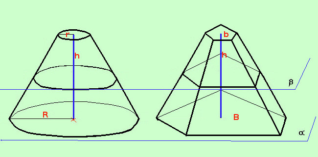

|
 Anche per il tronco di cono possiamo usare il principio di Cavalieri Consideriamo un tronco di piramide avente le stesse areee di base e la stessa altezza del tronco di cono: se ogni piano β parallelo al piano di base α taglia i due solidi in sezioni parallele aventi la stessa area allora i due solidi saranno equivalenti; Essendo il volume del tronco di piramide
Quindi, per ottenere la formula specifica per il tronco di cono bastera' operare le seguenti sostituzioni a B area della base maggiore del tronco di piramide sostituiamo l'area della base maggiore del cono π R2 a b area della base minore del tronco di piramide sostituiamo l'area della base minore del cono π r2 Quindi abbiamo
Posso estrarre di radice ed ottengo
Metto in evidenza anche il π ed ottengo la formula finale
Esempio Calcolare il volume di un tronco di cono di altezza 3 metri, di raggio di base maggiore 4 metri e raggio di base minore 2 metri Dati: h = 3 R = 4 m r = 2 m applico la formula
|
||||||||||||||||||||||||||||||||||||||||||

|

|

|

|